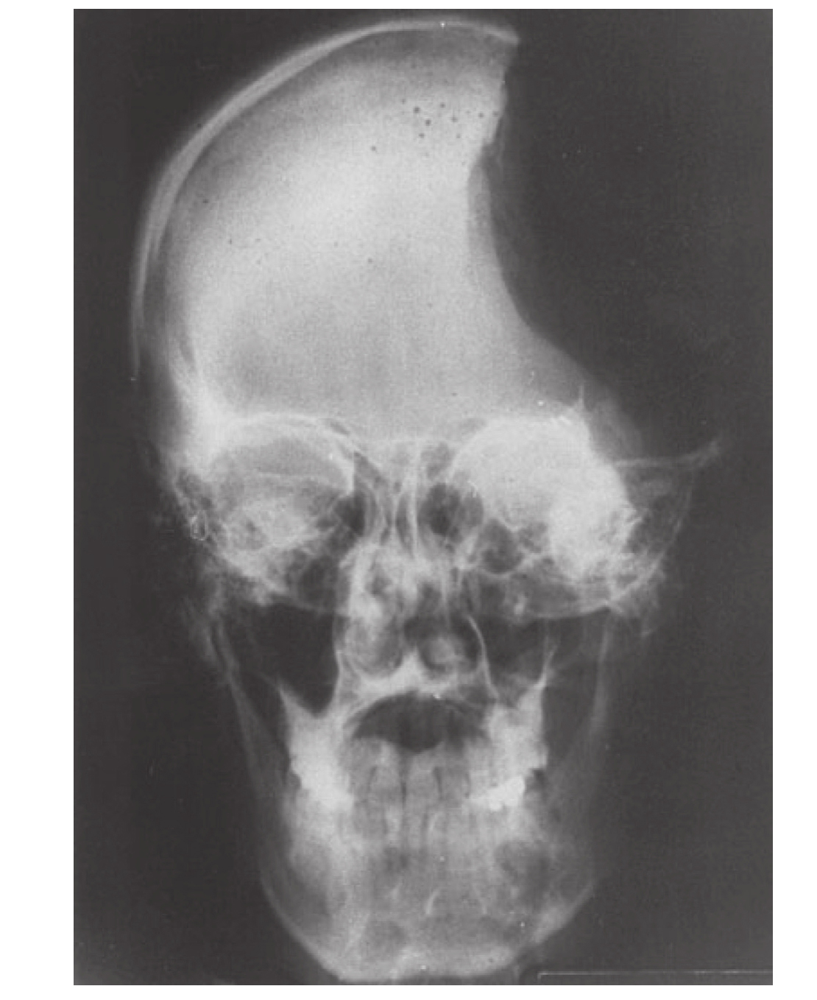

关于数量估算的大脑定位，N先生的案例并不能成为有力结论。鉴于他的损伤位置在大脑左半球，他残存的能力可能位于未受损伤的大脑右半球区域。然而也很有可能他的大脑左半球剩下的部分功能虽然不能精确计算，但仍然足以进行数量比较和近似计算。
其他种类的神经系统疾病更适合精确定位每个脑半球的算术能力。胼胝体是连接两个脑半球的大量神经纤维束，是两个脑半球之间信息传递的主要通路。这种连接有时会完全断开，有时会因为病灶性脑损伤而出现中断。较常见的情况是，在没有其他治疗手段的情况下，为了控制严重癫痫患者的病情，医生通过手术破坏胼胝体。无论是哪种情况，结果都是人的大脑皮层被分成两半，成为一位裂脑患者。两侧脑半球仍然会保持正常运转，只是它们几乎不能交换任何信息4。
在日常生活中，这些患者的身心似乎是健全的。他们的行为貌似完全正常。非常罕见的情况下，他们会用左手破坏右手所做的事情！然而，一项简单的神经病学检查足以确定胼胝体断开的事实。让患者闭上眼睛，我们把一个熟悉的物品放在他的左手中，尽管他能通过手势说明它的用途，却不能命名它。同样，如果在他的左视野内闪烁一张图片，他们发誓没有看到任何东西，但左手能在好多张图片中选出相应的图片。
这种奇怪的行为很容易得到解释。连接外部感觉器官和初级感觉皮层的主要神经元投射通路是交叉的，因此大脑右半球的感觉区域会对来自左侧的触觉或视觉刺激进行原始的加工。所以，当一个物品被放在左手中时，大脑右半球对刺激进行了充分的识别，并能够提取它的形状和功能。但是在胼胝体断开时，这种信息就不能被传递到大脑左半球。具体来讲，就是控制语言加工的大脑皮层（早在20世纪布罗卡的研究就已经把它定位在了大脑左半球）完全接收不到大脑右半球的感觉和视觉信息，大脑左半球语言网络因此否认看到了任何东西。如果非得给出一个答案的话，患者就会随机选择一种反应或依据先前的经验给出答案。在我开展的测试中就出现了这种情况，我们为患者蒙上眼睛，在她刚刚对放在右手上的一个木槌命名之后，把一个开瓶器放在她的左手上，她马上会说“另一个木槌”，但她的左手却一直在做拧开瓶子的动作。
胼胝体被切断的患者对神经心理学家来说就像一座金矿，因为他们能够对这些患者每个大脑半球的认知能力进行单独的系统评测。比如这样一个测试：让一位裂脑患者用1到9中的某个数乘2，并在给定的几个数字中选出正确的结果。通过在患者右侧或左侧视野中呈现这个数，并保证在目光移动之前就迅速结束，我们可以确保输入的信息仍局限在单个半球。运用这种方法，就可以判断哪一侧大脑半球可以识别数字、将它与2相乘，或使患者能够选出正确的结果。
让我们从最简单的操作开始：识别数字。在屏幕上呈现两个闪烁的数字，要求裂脑患者判断它们是否相同。当一个数字呈现在右侧，另一个数字呈现在左侧时，患者根本无法完成这个简单的任务。他们会作出随机反应，有时判断2和2是不同的，有时判断2和7是相同的。由于连接两个大脑半球的胼胝体的断开，患者无法比较分别出现在左右两侧的数字的大小，即使每个半球都能独自识别数字。但是当两个数字呈现在同一侧视野内，不管左侧还是右侧，患者的回答几乎完全正确。
在测试过两个大脑半球在识别数字方面的情况之后，实验并未停止。裂脑患者也能识别数字所代表的特定数量。为了证明这个推测，我们可以把数字和点阵一起呈现给患者。当两者出现在患者的同一侧视野时，他们很容易就能判断出两者是否匹配。因此，我们可以认为每个大脑半球都知道3和“ ”代表的是一个相同的数量。
两个大脑半球也均能识别数字之间的顺序关系。不管数字呈现在右侧视野还是左侧视野，裂脑患者都能快速判断出该数字比参考数字小还是大，也能在两个数字中指出哪个更大或哪个更小。与大脑左半球相比，大脑右半球反应稍慢，并且给出的答案不太精确，但两者的差异很小。可见，每个大脑半球都拥有进行数量表征和比较的功能。
但在解决语言和心算问题时，两个大脑半球的相似性就会消失。大脑左半球在这些功能上具有无可争辩的优势。重复上述实验过程，结果显示，大脑右半球不能识别书面数字。大脑右半球视觉能力让我们可以识别简单的形状，如数字6，但无法识别像“six”这样的单词。对于多数裂脑患者而言，大脑右半球也是无声的，他们不能出声表达大多数词语。因此，如果在电脑屏幕的左边闪现数字6，多数裂脑患者的行为就像N先生一样，他们无法说出这是什么数字，但他们能用左手指出这个数字比5大。
一些特殊的患者设法克服了大脑右半球语言能力缺失的问题。例如，迈克尔·加扎尼加（Michael Gazzaniga）(22)和史蒂文·希利亚德（Steven Hillyard）研究了一名叫L.B.的患者，他可以在几秒钟之内命名呈现在他右脑的数字5。与正常人不同，他对数字的命名时间会随数字的增大而呈线性增长。他只用2秒钟就能命名数字2，但却需要5秒钟才能命名数字8。像N先生一样，L.B.似乎在慢慢地默背数字序列，据他说，直到有个数字“凸显”出来，他才能出声读出来。没有人知道当他背诵到他所看到的那个数字时，大脑右半球究竟是发出怎样的信号让他说出数字的。那些信号可能是某种手指运动、面部痉挛或者是裂脑患者自己设计的其他一些暗示。总之，L.B.需要通过数数才能命名呈现在左侧视野中的数字，这一现象表明，他的大脑右半球缺乏正常的语言能力。
大脑右半球也不能进行心算。当一个阿拉伯数字呈现在患者的右侧视野，他们使用大脑左半球对其进行加4、减2、乘3或除2的运算时，并不会感觉到明显的困难。但当数字呈现在左侧视野，由大脑右半球进行加工运算时，就算这些计算非常简单，患者也不可能完成。即使要求患者指出结果而不是说出结果，他们也无法完成任务。
既然大脑右半球对精确计算没有什么价值，那它对估算有价值吗？为了评估这种可能性，我和劳伦特·科恩以视觉方式呈现一组加法问题，让两个大脑半球胼胝体连接部分中断的患者判断它们是否正确6。即使是存在明显错误的运算，如“2+2=9”，当它被右脑加工时，被试也表现出随机的反应，在约一半的实验中将其判断为正确。令人意外的是，被试突然在一连16组的实验中做对了15组，这种事件随机产生的可能性小于1/4 000。因此，我认为被试的大脑右半球能估算简单的加法，但他只是在这个由16组实验项组成的组块中很好地表现出了这种能力。实际上，大脑右半球仅拥有一种特定的能力是不够的，它必须理解实验者给出的实验任务，并在大脑左半球接收到之前有机会做出反应。
乔丹·格拉夫曼（Jordan Grafman）和他的同事研究了另一位患者，更进一步支持了大脑右半球只是在非常简单的运算中起作用的假设7。J.S.曾是一位年轻的美国军人，在22岁参加战争时失去了大部分左颅骨和其下的大脑皮层（见图7-1）。令人不可思议的是，J.S.在经历多次外科手术，遭受反复感染以及继发的严重癫痫之后，仍然幸免于难。他现在仅依靠大脑右半球过着半独立的生活（左半球只剩下枕叶）。可以预料，J.S.的口头语言理解能力和输出能力严重受损。他既不能读，又不能写，也不能命名任何物品，这些缺陷与严重的胼胝体切断患者的大脑右半球表现出的局限性完全吻合。他在数字加工测试中的结果也与其他裂脑研究的结果一致。J.S.能够辨别阿拉伯数字，知道如何比较它们，也能估计一组物品的数量，偶尔能够出声读出几个个位数以及某些两位数。分配给他的简单加法和减法任务，他只能解决大约一半。乘法、除法和多位数运算对他而言是不可逾越的挑战。

尽管患者J.S.在战争中失去了大脑左半球，他仍可以识别和比较阿拉伯数字，但是精确计算对他而言极为困难。
图7-1 大脑左半球受损的患者
资料来源：转自Grafman et al., 1989，经出版商许可。